GeoScience part 6
Lviv University
Spatial Data Analysis
Exploratory Spatial Data Analysis (ESDA)
ESDA augments Tukey’s exploratory data analysis: a large collection of techniques used to “orient yourself” — to find structure inside your dataset.
For geographical problems this usually means asking whether our data displays a geographical pattern.
Whatever the nature of my data: is there a geographical pattern, and are there places where this pattern does not hold?
Choropleth mapping
Overview
Choropleths are geographic maps that display statistical information encoded in a colour palette. They let us display non-geographic attributes on a geographic map.
The word choropleth stems from the root “choro”, meaning region. They represent data at the region level, and are appropriate for areal unit data: each observation combines a value of an attribute with a geometric figure, usually a polygon.
Choropleths derive from an era where technological constraints precluded unclassed maps.
Principles
Three dimensions to think about intentionally
- How many groups? Select a number of groups smaller than \(n\) into which all values will be mapped.
- Which algorithm? Identify a classification algorithm that executes the mapping following a principle aligned with our interest.
- Which colours? Assign a colour to each group so it encodes the information we want to reflect.
In broad terms: the classification scheme defines the number of classes and the assignment rules; a good symbolization conveys value differentiation across classes.
The effectiveness of a choropleth map depends largely on the purpose of the map.
Choropleth mapping
Data classification as a problem
Partition attribute values into mutually exclusive and exhaustive groups. Formally, define class boundaries such that
\[ c_j < y_i \le c_{j+1} \ \forall y_i \in C_{j} \]
where \(y_i\) is the value at location \(i\), \(j\) a class index, and \(c_j\) the lower bound of interval \(j\).
Different classification schemes obtain from their definition of the class boundaries.
Quantitative data classification
Example: Mexican state incomes
Per capita GDP for 32 Mexican states, 1940:
| NAME | PCGDP1940 | |
|---|---|---|
| 0 | Baja California Norte | 22361.0 |
| 1 | Baja California Sur | 9573.0 |
| 2 | Nayarit | 4836.0 |
| 3 | Jalisco | 5309.0 |
| 4 | Aguascalientes | 10384.0 |
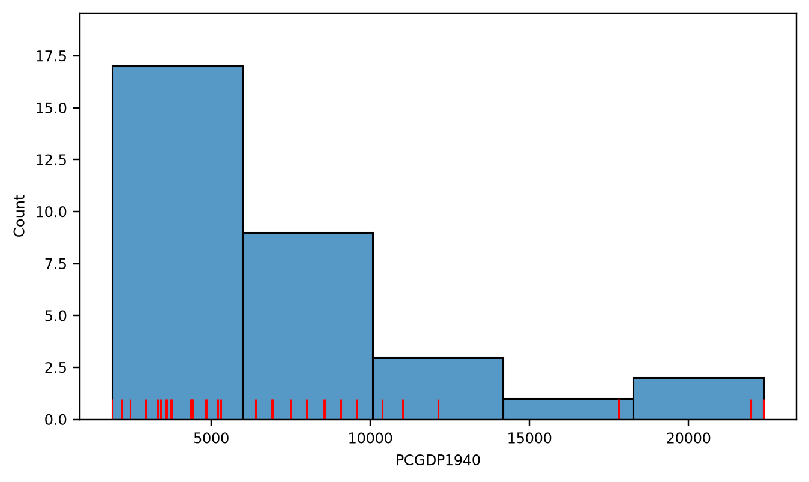
The distribution is positively skewed, as is common in regional income studies: the mean exceeds the median, giving the long right tail. This skewness will have implications for the choice of scheme.
Quantitative data classification
The histogram is already a classifier
count 32.000000
mean 7230.531250
std 5204.952883
min 1892.000000
25% 3701.750000
50% 5256.000000
75% 8701.750000
max 22361.000000
Name: PCGDP1940, dtype: float64Sort the data \(x_0 \le x_1 \ldots \le x_{n-1}\). For a prespecified \(k\), the problem is to select \(k-1\) break points along the sorted values.
[17. 9. 3. 1. 2.]
[ 1892. 5985.8 10079.6 14173.4 18267.2 22361. ]The first bin runs from 1892 to 5985.8 and contains 17 observations.
Quantitative data classification
The Freedman-Diaconis rule
seaborn.histplot uses matplotlib’s hist under the hood to determine class boundaries. The interval width \(w\) is
\[ w = 2 * IQR * n^{-1/3} \]
where \(IQR\) is the inter-quartile range. Given \(w\), the number of bins is
\[k = \dfrac{(max-min)}{w}\]
The choropleth literature has many alternative algorithms that prioritize different criteria. We compute them with mapclassify, from the PySAL family.
Equal intervals
Same width in value space
A special case of Freedman-Diaconis generalized: split the range into \(k\) equal-length intervals, each of width \(w = \frac{x_{n-1} - x_0}{k}\).
Advantages and the catch
Dual advantages: simplicity and ease of interpretation.
However: the rule only considers the extreme values of the distribution. In some cases this leaves one or more classes sparse — clearly so here, where the majority of values land in the first two classes.
Quantiles
Roughly equal counts
Each class will have approximately \(\mid\frac{n}{k}\mid\) observations. With \(k=5\), the sample quintiles define the upper limits:
Quantiles
Interval Count
----------------------------
[ 1892.00, 3576.20] | 7
( 3576.20, 4582.80] | 6
( 4582.80, 6925.20] | 6
( 6925.20, 9473.00] | 6
( 9473.00, 22361.00] | 7The counts are roughly equal, but the widths of the intervals are markedly different — which can lead to problems of interpretation.
Quantiles
The problem of ties
A second challenge arises when there are many duplicate values, so limits for one or more classes become ambiguous.
If \(n=20\) but 10 observations share the minimum value, then for \(k>2\) class boundaries become ill-defined: splitting at the \(n/k\) ranked value depends on how ties are treated.
Quantiles
Interval Count
--------------------
[0.00, 0.00] | 11
(0.00, 1.40] | 1
(1.40, 6.20] | 4
(6.20, 9.00] | 4mapclassify warns, then forms a lower number of classes using pseudo-quantiles — quantiles defined on the unique values in the sample.
Mean-standard deviation
Distance from the mean, measured in \(s\)
Class boundaries are set at multiples of the standard deviation from the sample mean. A common definition for \(k=5\):
\[c_{0}^u = \bar{x} - 2s, \quad c_{1}^u = \bar{x}-s, \quad c_{2}^u = \bar{x}+s, \quad c_{3}^u = \bar{x}+2s\]
Values beyond \(\pm 2s\) go in the top/bottom class.
StdMean
Interval Count
----------------------------
( -inf, -3179.37] | 0
(-3179.37, 2025.58] | 1
( 2025.58, 12435.48] | 28
(12435.48, 17640.44] | 0
(17640.44, 22361.00] | 3Best used when data is normally distributed, or at least when the sample mean is a meaningful anchor. Clearly not the case here: the positive skew produces an inadmissible upper bound for the first class and concentrates the vast majority of values in the middle class.
Maximum breaks
Look at the gaps, not the values
Rather than considering a value in itself, look at how far apart each value is from the next one in the sorted sequence. Place the \(k-1\) break points between the pairs most stretched apart, in descending order of gap size.
MaximumBreaks
Interval Count
----------------------------
[ 1892.00, 5854.00] | 17
( 5854.00, 11574.00] | 11
(11574.00, 14974.00] | 1
(14974.00, 19890.50] | 1
(19890.50, 22361.00] | 2Appropriate when we want observations in each class separated from those in neighbouring classes - works well for non-unimodal distributions, and is relatively fast.
But its simplicity can surprise: only the top \(k-1\) differences are considered, so more nuanced within-group dissimilarities are ignored.
Boxplot
A blend of quantiles and standard deviation
Here \(k\) is predefined to six. The upper limit of the first class is
\[q_{0.25}-h \, IQR\]
and the lower limit of the sixth class is \(q_{0.75}+h \, IQR\), where \(h\) is the hinge. Intermediate classes take the 0.25, 0.50 and 0.75 percentiles.
BoxPlot
Interval Count
----------------------------
( -inf, -3798.25] | 0
(-3798.25, 3701.75] | 8
( 3701.75, 5256.00] | 8
( 5256.00, 8701.75] | 8
( 8701.75, 16201.75] | 5
(16201.75, 22361.00] | 3Values in the extreme classes are defined as outliers. Since income is non-negative, the lower outlier class here has an inadmissible upper bound — lower outliers are impossible for this sample.
Boxplot
Changing the hinge
The default is \(h=1.5\), but it can be specified:
BoxPlot
Interval Count
----------------------------
( -inf, -1298.25] | 0
(-1298.25, 3701.75] | 8
( 3701.75, 5256.00] | 8
( 5256.00, 8701.75] | 8
( 8701.75, 13701.75] | 5
(13701.75, 22361.00] | 3This affects the definition of the outlier classes and the neighbouring internal classes.
Head-tail breaks
Recursive partitioning around iterative means
Split the data around the mean, then split the “head” around its mean, and so on. The process continues until the distribution within each class no longer displays a heavy tail — there is a balance between the number of smaller and larger values.
HeadTailBreaks
Interval Count
----------------------------
[ 1892.00, 7230.53] | 20
( 7230.53, 12244.42] | 9
(12244.42, 20714.00] | 1
(20714.00, 22163.00] | 1
(22163.00, 22361.00] | 1Particularly effective for data with heavy-tailed distributions: power law, log-normal.
Jenks-Caspall breaks
A heuristic, not a deterministic rule
Aims to minimize the sum of absolute deviations around class means.
- Start with a prespecified number of classes and an arbitrary initial set of breaks (e.g., quintiles)
- Consider moving observations between adjacent classes — the largest value of the lowest quintile into the second, the lowest value of the second into the first
- Make the candidate move with the largest reduction in the objective function
- Continue until no improving moves remain
JenksCaspall
Interval Count
----------------------------
[ 1892.00, 2934.00] | 4
( 2934.00, 4414.00] | 9
( 4414.00, 6399.00] | 5
( 6399.00, 12132.00] | 11
(12132.00, 22361.00] | 3This is the one-dimensional case of K-Means clustering.
Fisher-Jenks
Fisher-Jenks: guaranteed optimal
A dynamic programming approach minimizing the sum of absolute deviations around class medians. Unlike Jenks-Caspall, it is guaranteed to produce an optimal classification for a prespecified \(k\):
Max-p
Max-p: a region-building heuristic
Adapts the max-p region building method to map classification. Similar in spirit to Jenks-Caspall - greedy swapping between adjacent classes - so no optimal solution is guaranteed:
Comparing classification schemes
Optimality is relative to an objective
Freedman-Diaconis is “optimal” - but only relative to its objective function: minimizing the difference between the area under the estimated kernel density and that under the theoretical population distribution.
This notion of statistical fit is important, but it is not the only consideration. Also relevant:
- the spatial distribution of the attribute values
- the ability of the classifier to convey a sense of that spatial distribution
And these are not necessarily directly related to the statistical distribution.
Comparing classification schemes
Absolute deviation around class medians (ADCM)
A measure of fit allowing comparison of alternative classifiers for the same \(k\) — a sense of how “compact” each group is. Lower is better.
# Bunch classifier objects
class5 = q5, ei5, ht, mb5, msd, fj5, jc5, mp5
# Collect ADCM for each classifier
fits = numpy.array([c.adcm for c in class5])
adcms = pandas.DataFrame(fits)
adcms["classifier"] = [c.name for c in class5]
adcms.columns = ["ADCM", "Classifier"]
ax = seaborn.barplot(
y="Classifier", x="ADCM", data=adcms, hue="Classifier",
palette="Pastel1", legend=False
)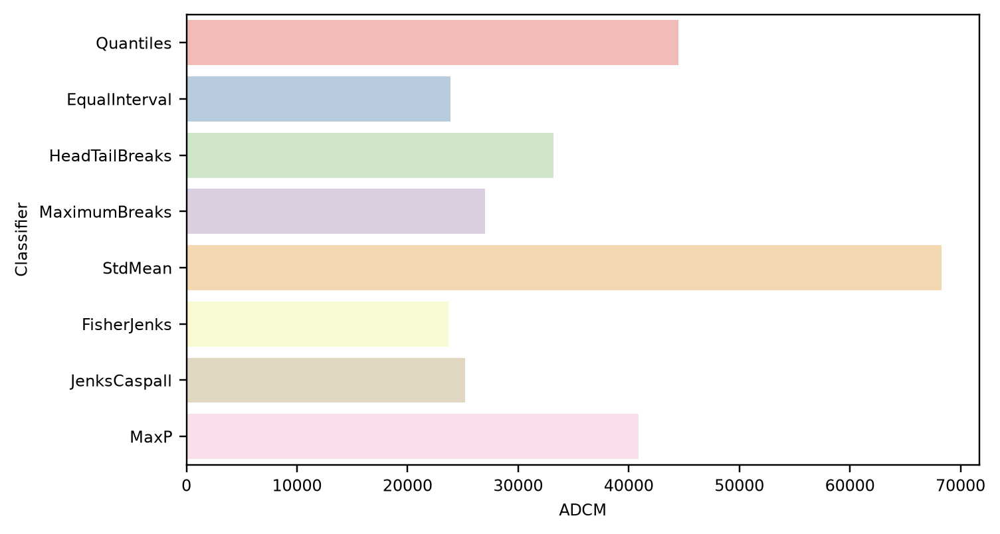
Reading the ADCM chart
As expected, Fisher-Jenks dominates all other \(k=5\) classifiers, with an ADCM of 23,729.
Interestingly, equal interval performs well despite its sensitivity to extreme values.
The mean-standard deviation classifier has a very poor fit, due to the skewed nature of the data and the concentrated assignment of the majority of observations to the central class.
Comparing classification schemes
Per-observation comparison
The ADCM is a global measure. As a complement, consider how each observation was classified across the alternatives, using the class bin attribute yb:
We sort rows by value and transpose (.T) so states run along the horizontal axis and schemes along the vertical.
Comparing classification schemes
Code
f, ax = plt.subplots(1, figsize=(9, 3))
seaborn.heatmap(
mx.set_index("NAME")
.sort_values("PCGDP1940")[
[
"Head-Tail Breaks",
"Fisher-Jenks",
"Maximum Breaks",
"Equal Interval",
"MaxP",
"Quantiles",
"Jenks Caspall",
"Mean-Standard Deviation",
]
]
.T,
cmap="YlGn",
cbar=False,
ax=ax,
)
ax.set_xlabel("State ID");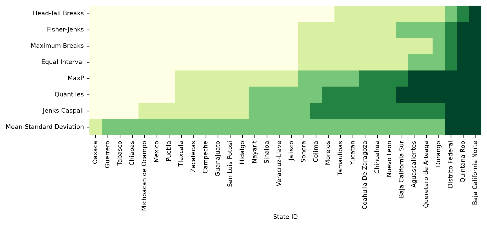
Comparing classification schemes
What the heatmap reveals
- The only state treated consistently across all \(k=5\) classifiers is Baja California Norte, placed in the highest class by every one
- The mean-standard deviation classifier has an empty first class, due to the inadmissible upper bound and over-concentration in the central class
A meso-level view — counts per class per classifier:
| Quantiles | EqualInterval | HeadTailBreaks | MaximumBreaks | StdMean | FisherJenks | JenksCaspall | MaxP | |
|---|---|---|---|---|---|---|---|---|
| Class-0 | 7 | 17 | 20 | 17 | 0 | 17 | 4 | 7 |
| Class-1 | 6 | 9 | 9 | 11 | 1 | 8 | 9 | 10 |
| Class-2 | 6 | 3 | 1 | 1 | 28 | 4 | 5 | 5 |
| Class-3 | 6 | 1 | 1 | 1 | 0 | 1 | 11 | 4 |
| Class-4 | 7 | 2 | 1 | 2 | 3 | 2 | 3 | 6 |
Fisher-Jenks and equal intervals are strikingly similar — they agree on all 17 states in the first class. The only state distinguishing them is Baja California Sur.
Color
A caution before we colour
The spatial units are far from homogeneous in shape and size. This has major impacts on our brain’s pattern recognition: we are drawn to the larger polygons, even when they are not the most relevant.
Yet when we considered the statistical distribution above, each observation was given equal weight.
Thus the spatial distribution is more complicated to evaluate, from both a visual and a statistical perspective.
Color
Three types of numerical attribute
The choice of colour scheme should be based on the type of variable:
- sequential — continuous data with the origin at one end of the series
- diverging — continuous data with a meaningful mid-range critical value
- qualitative — categorical data
Sequential palettes
Making a choropleth
Making choropleths on geo-tables is an extension of plotting their geometries — the same .plot() function, plus the column to encode with colour.
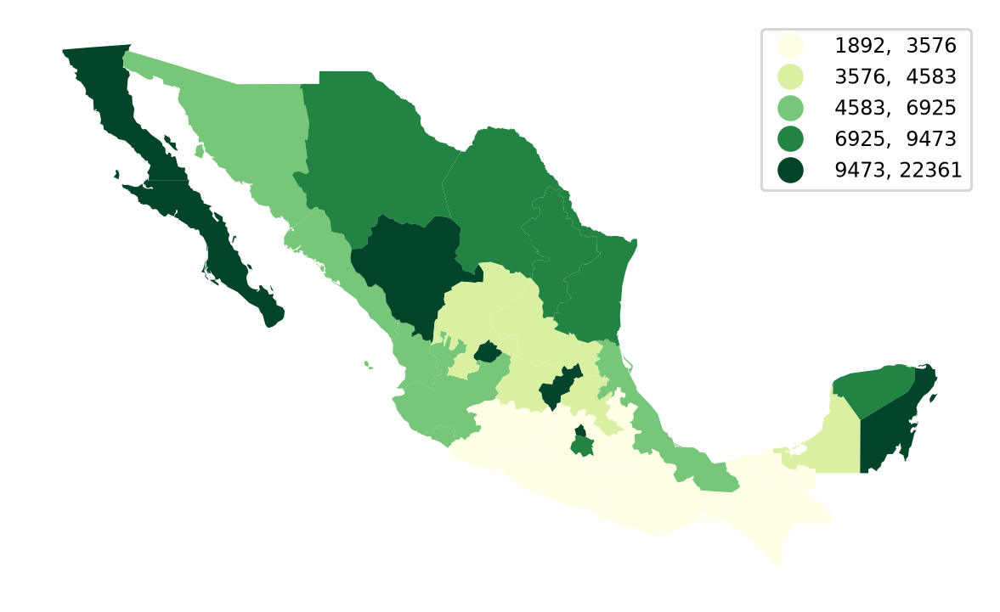
The classification scheme uses the same names as mapclassify — in fact the underlying computation is mapclassify, just dispatched so we can make maps in one line.
Sequential palettes
A gradient from an origin to a destination colour
Sequential palettes can also use shades of a single colour:
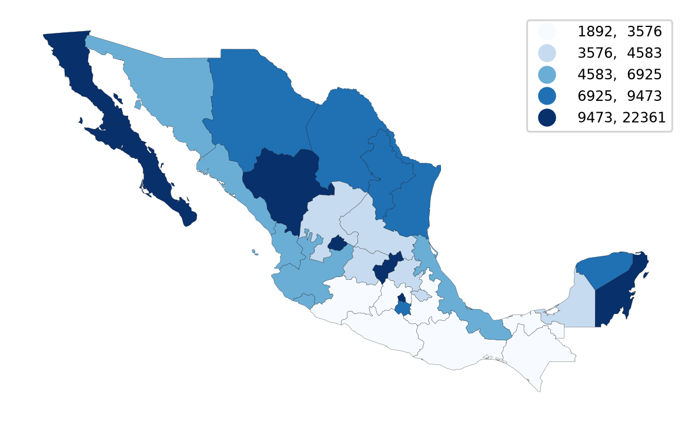
Note we switch borderlines to black so states in the lowest category can be distinguished from the white background.
Diverging palettes
Equal emphasis on the middle and both extremes
Light colours emphasize the mid-range class; dark colours with contrasting hues distinguish low and high extremes.
To illustrate, derive the change in a state’s rank in the income distribution from 1940 to 2000:
# Create income-based rank table (Rank 1 is highest)
rnk = mx[["NAME", "PCGDP1940", "PCGDP2000"]].rank(ascending=False)
# Compute change from 1940 to 2000
rnk["change"] = rnk["PCGDP1940"] - rnk["PCGDP2000"]
# Add column with bin class
rnk["class"] = pandas.cut(
rnk["change"], [-numpy.inf, -5, 0, 5, 20]
)These are descending ranks: the wealthiest state has rank 1, so a negative change means moving down the income distribution.
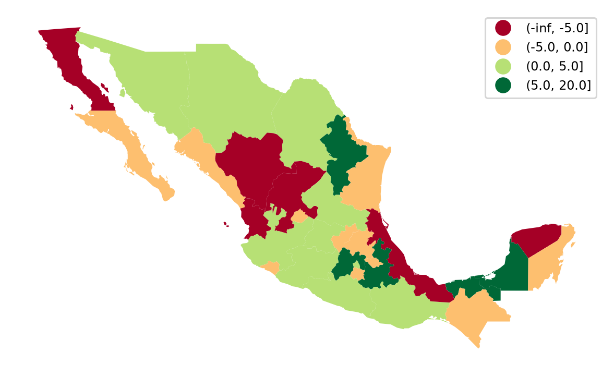
Red hues are states that moved downward in the income distribution, green hues upward; darker hues represent a larger movement.
Qualitative palettes
Categorical data: differences, not magnitudes
Colours do not follow a gradient — observations in one group are not more or less, above or below others, just different.
The Mexico data has a region definition grouping states into contiguous clusters:
A naive and incorrect display treats region as sequential:
Qualitative palettes
Why that map is wrong
The region variable is not on an interval scale. Differences between values have no quantitative significance — they simply indicate region membership.
Yet the choropleth gives a clear visual cue that regions in the south have larger values than those in the north, because the colour map implies an intensity gradient.
The fix: declare the variable categorical.
User-defined choropleths
When domain knowledge sets the breaks
Bespoke partitions that follow no algorithm but are informed by, e.g., policy. Imagine exploring areas below $$$10,000; between $$$10,000 and $$$12,500; $$$12,500 and $$$15,000; and above $$$15,000 — where the first group is targeted one way, the second and third differently, and the fourth is outside the policy.
User-defined choropleths
mapclassify’s own plotting method
We use reverse viridis to draw attention to the classes at the bottom of the scale — purple areas are those not targeted by our hypothetical policy.
User-defined choropleths
The pandas alternative
Pooled classifications
One classification across several maps
Sometimes a choropleth is part of a larger figure with more choropleths. If each is an independent map, everything above applies directly. But often we want a single classification used consistently across the series.
array([ 6399. , 9664.2, 13941.6, 21509.2, 54349. ])We then feed the global bins to UserDefined on each panel.
Code
f, axs = plt.subplots(2, 2, figsize=(9, 9))
axs = axs.flatten()
for i, y in enumerate(years):
mx.plot(
y, # Year to plot
scheme="UserDefined", # Use our own bins
classification_kwds={
"bins": pooled.global_classifier.bins
}, # Use global bins
legend=True,
ax=axs[i],
)
axs[i].set_axis_off()
axs[i].set_title(y)
plt.tight_layout()
plt.show()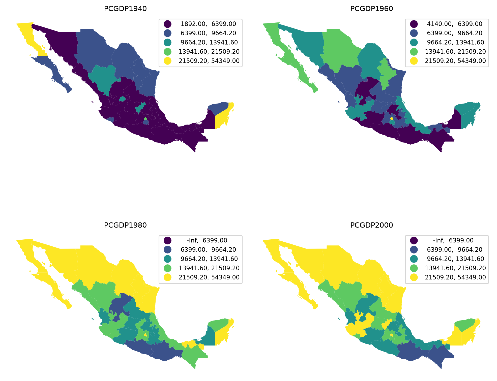
Global Spatial Autocorrelation
Global spatial autocorrelation
The concept
The existence of a “functional relationship between what happens at one point in space and what happens elsewhere” - Anselin (1988)
The degree to which similarity in values between observations is related to similarity in locations.
Compare with its relatives:
- correlation — how values in one variable change as a function of another
- temporal autocorrelation — the value of a variable now, vs. previous periods
- spatial autocorrelation — the value of a variable here, vs. the same variable elsewhere
Global spatial autocorrelation
An alternative framing
The degree of information contained in the value of a variable at a given location about the value of that same variable in other locations.
Start from its absence
Spatial randomness: a situation in which the location of an observation gives no information whatsoever about its value. A variable is spatially random if its distribution follows no discernible spatial pattern.
Spatial autocorrelation is the absence of spatial randomness.
Spatial autocorrelation
Two dimensions: sign and scale
Sign:
- positive (similarity and geographical closeness go hand in hand)
- negative (similar values located away from each other).
Scale:
- global (the overall trend that the location of values follows; the degree of clustering)
- local (deviations from the global trend at much more focused levels).
Example: the EU Referendum
The data
The 2016 Brexit referendum, official Electoral Commission data at the local authority level:
- Electoral Commission — vote percentages at local authority level (
csv) - ONS — Local Authority Districts (December 2016) Generalised Clipped Boundaries, WGS84 (GeoJSON)
Our variable of interest is Pct_Leave: the proportion of votes for the Leave campaign.
EU Referendum
Reading and joining
ref = pandas.read_csv(
f"{GDS}/brexit/brexit_vote.csv", index_col="Area_Code"
)
lads = geopandas.read_file(
f"{GDS}/brexit/local_authority_districts.geojson"
).set_index("lad16cd")
db = (
geopandas.GeoDataFrame(
lads.join(ref[["Pct_Leave"]]), crs=lads.crs
)
.to_crs(epsg=3857)[
["objectid", "lad16nm", "Pct_Leave", "geometry"]
]
.dropna()
)
db.info()<class 'geopandas.geodataframe.GeoDataFrame'>
Index: 380 entries, E06000001 to W06000023
Data columns (total 4 columns):
# Column Non-Null Count Dtype
--- ------ -------------- -----
0 objectid 380 non-null int32
1 lad16nm 380 non-null str
2 Pct_Leave 380 non-null float64
3 geometry 380 non-null geometry
dtypes: float64(1), geometry(1), int32(1), str(1)
memory usage: 20.9 KBWe project to Spherical Mercator (EPSG:3857), the preferred choice of web maps, so we can combine with contextual tiles.
EU Referendum
Code
f, ax = plt.subplots(1, figsize=(8, 8))
db.plot(
column="Pct_Leave",
cmap="viridis",
scheme="quantiles",
k=5,
edgecolor="white",
linewidth=0.0,
alpha=0.75,
legend=True,
legend_kwds={"loc": 2},
ax=ax,
)
contextily.add_basemap(
ax, crs=db.crs, source=contextily.providers.Esri.WorldTerrain
)
ax.set_axis_off()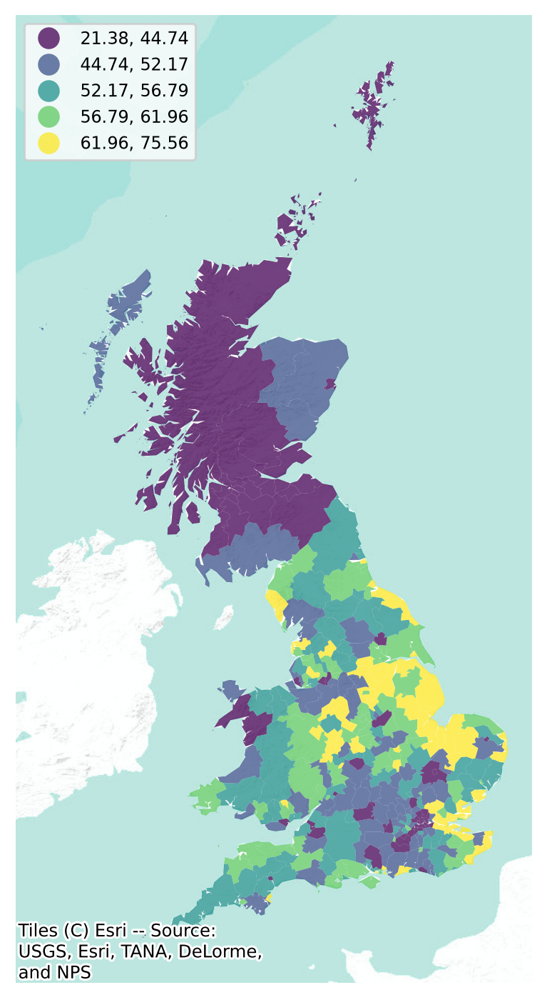
Percentage of voters wanting to leave the EU in the 2016 UK Referendum.
EU Referendum
EU Referendum
Why we need statistics at all
At first sight, the map appears to display a fair amount of positive spatial autocorrelation. But humans are very good pattern detectors — life has rewarded pattern recognition since we started as a species.
This extraordinary capability also creates many false positives. And on maps, the shape and size of geometries further distort our perception.
We can guess at the presence of spatial autocorrelation. Determining whether what we see could have come from pure chance is easier said than done.
The spatial lag
Definition
One of the most common and direct applications of spatial weights. In matrix notation:
\[ Y_{sl} = \textbf{W} Y \]
or, individually:
\[ y_{sl-i} = \sum_j w_{ij} y_j \]
Because non-neighbours receive a weight of zero, \(y_{sl-i}\) really captures the product of values and weights for \(i\)’s neighbours.
- if \(\textbf{W}\) is binary \(\rightarrow\) the sum of the values of \(i\)’s neighbours
- if \(\textbf{W}\) is row-standardized \(\rightarrow\) a local average: the average value of \(Y\) in the neighbourhood of \(i\)
Conceptually, the spatial lag captures the behaviour of a variable in the immediate surroundings of each location - it is akin to a local smoother.
The spatial lag
Two local authorities
| Pct_Leave | Pct_Leave_lag | |
|---|---|---|
| lad16cd | ||
| E08000012 | 41.81 | 54.61375 |
| S12000019 | 37.94 | 38.01875 |
E08000012is Liverpool — a notorious “Remainer” island among the mostly-Leave North of EnglandS12000019is Midlothian, in Scotland, where no local authority voted to leave
Both display a similar percentage voting to leave (42% and 38%). But the difference in their spatial lags captures the wider geographical context, which is quite different.
Code
f, axs = plt.subplots(1, 2, figsize=(11, 5.5))
ax1, ax2 = axs
for col, ax, title in [
("Pct_Leave", ax1, "% Leave"),
("Pct_Leave_lag", ax2, "% Leave - Spatial Lag"),
]:
db.plot(
column=col,
cmap="viridis",
scheme="quantiles",
k=5,
edgecolor="white",
linewidth=0.0,
alpha=0.75,
legend=True,
ax=ax,
)
ax.set_axis_off()
ax.set_title(title)
contextily.add_basemap(
ax,
crs=db.crs,
source=contextily.providers.Esri.WorldTerrain,
)
plt.show()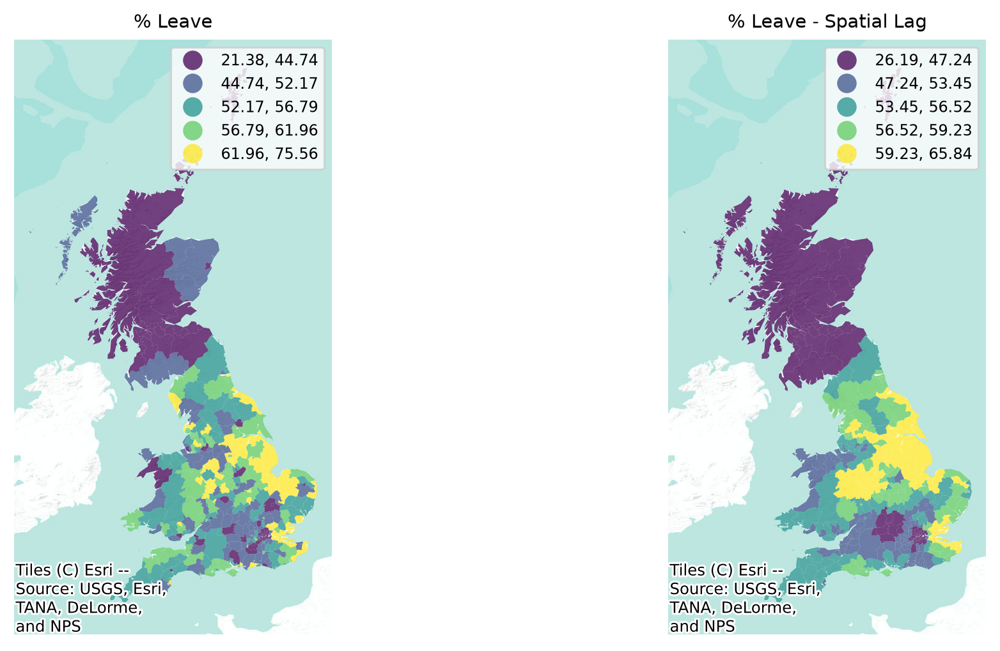
Stark differences between immediate neighbours on the left (Liverpool!) are diminished on the right: the lag smooths.
Binary case: join counts
The checkerboard intuition
Imagine a checkerboard with green (G, value 0) and yellow (Y, value 1) squares. Count the occurrences of:
- GG and YY joins → positive spatial autocorrelation
- GY / YG joins → negative spatial autocorrelation
Compare the observed counts with a baseline of how many one would expect under complete spatial randomness.
Code
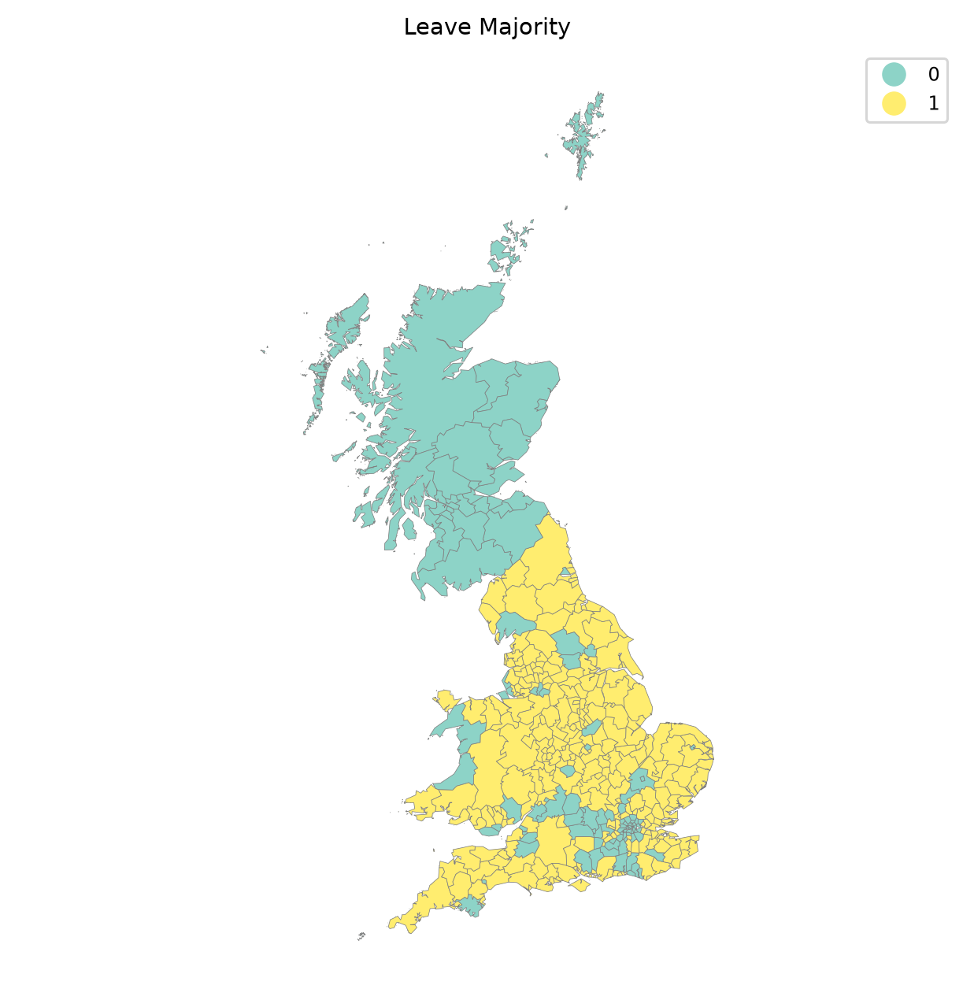
Visually, a clear case of positive spatial autocorrelation: few visible cases of an observation surrounded by others in the opposite category.
Binary case: join counts
Computing the statistic
Since weights here only delimit who is a neighbour, the join count statistic requires binary weights — transform w back to its original state:
BB (Leave-Leave): 871.0
WW (Remain-Remain): 302.0
BW (opposite): 347.0
Total joins J: 1520.0As is common in PySAL, jc holds far more than the statistic itself.
Binary case: join counts
Observed vs. expected
Expected BB under randomness: 727.4
Expected BW under randomness: 649.3
p_sim_bb: 0.001
p_sim_bw: 1.0Inference uses 999 random spatial permutations of the observed values, creating synthetic maps under the null of complete spatial randomness.
Both p-values are one-sided with the alternative “observed is greater than under randomness”. So:
p_sim_bb≈ 0.001 \(\rightarrow\) far more same-category joins than expectedp_sim_bw= 1.0 \(\rightarrow\) the observed opposite joins are lower than every simulation
Together: clear positive spatial autocorrelation.
Continuous case: Moran’s \(I\)
The statistic
\[ I = \dfrac{n}{\sum_i\sum_j w_{ij}} \dfrac{\sum_i\sum_j w_{ij} \, z_i \, z_j}{\sum_i z_i^2} \]
where \(n\) is the number of observations, \(z_i\) the standardized value at \(i\), and \(w_{ij}\) the cell of \(W\) for the pair \((i,j)\).
The Moran Plot
A way of visualizing a spatial dataset to explore the nature and strength of spatial autocorrelation: a scatter plot of the variable of interest against its spatial lag.
The variable is usually standardized (mean subtracted) so values can be interpreted as above or below average.
Continuous case: Moran’s \(I\)
Code
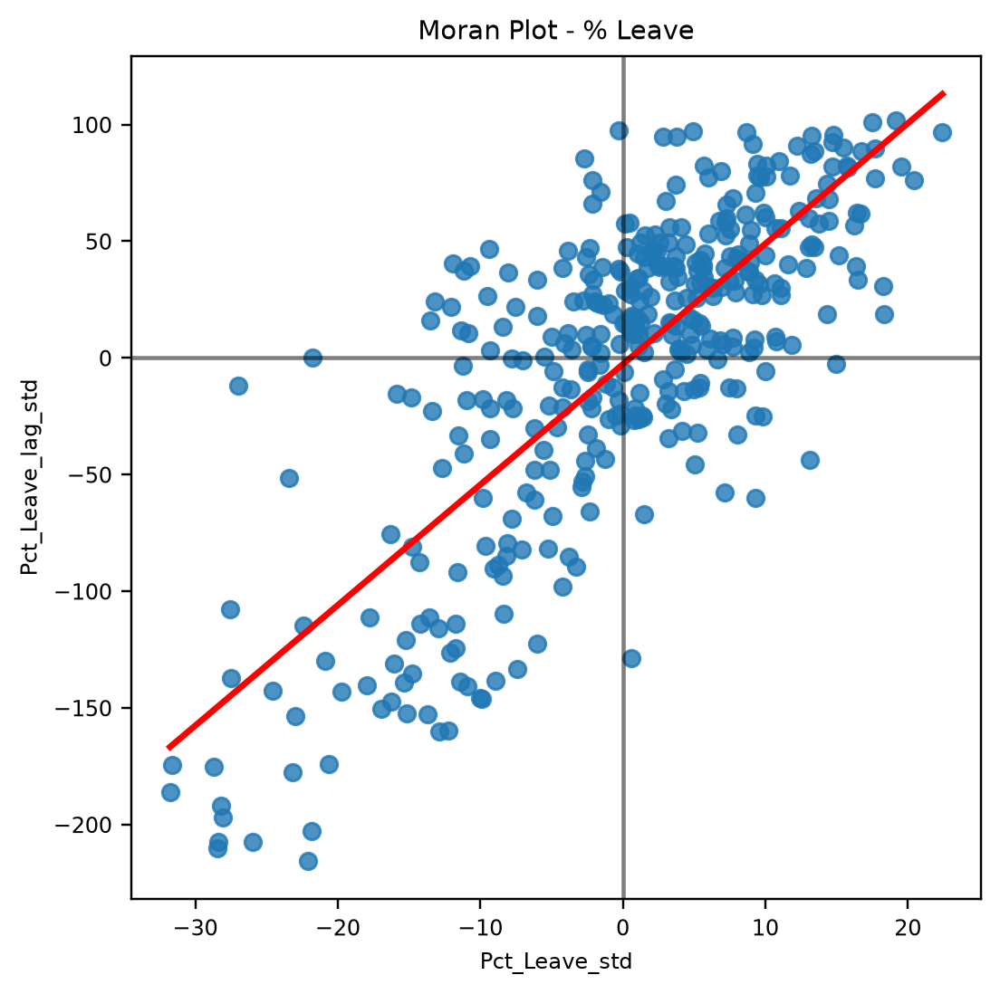
Reading the Moran Plot
The horizontal axis is the standardized Leave percentage; the vertical is its spatial lag which, because \(W\) is row-standardized, is the average standardized Leave vote in the neighbourhood of each observation.
The linear fit represents the best way to summarize the relationship as a straight line — and it is positive.
Local authorities where people voted in high proportion to leave the EU tend to be located nearby other regions that also registered high Leave proportions.
This does not mean there are no high-among-low cases. It means that, if we had to summarize the main pattern, it is positive clustering over space.
Continuous case: Moran’s \(I\)
From picture to number
Just as the mean summarizes a histogram in a non-spatial setting, Moran’s \(I\) summarizes the Moran Plot.
In fact there is a close connection: the value of Moran’s \(I\) is the slope of the linear fit overlaid on the Moran Plot.
Interpreting p_sim
An empirical p-value: the proportion of realizations in the simulation under spatial randomness that are more extreme than the observed value.
A small enough p-value lets us reject the hypothesis that the map is random — the map displays more spatial pattern than we would expect if values had been randomly allocated to locations.
0.001 is actually the minimum value obtainable given 999 permutations.
If we generated a large number of maps with the same values randomly allocated over space, fewer than 0.1% would display a larger Moran’s \(I\) than the one we observe.
Nearby areas tended to vote alike.
Continuous case: Moran’s \(I\)
Left: the empirical distribution from 999 random maps (grey), the mean (blue rug), and the observed Moran’s \(I\) (red rug) — clearly far to the right.
Right: the equivalent Moran scatterplot.
Other global indices
The contiguity ratio: Geary’s \(C\)
\[ C = \dfrac{(n-1)} {2 \sum_i \sum_j w_{ij}} \dfrac{\sum_i \sum_j w_{ij} (y_i - y_{j})^2} {\sum_i (y_i - \bar{y})^2} \]
Both Moran and Geary compare the relationship of \(Y\) within each observation’s local neighbourhood to that over the entire sample. But:
- Moran’s \(I\) takes cross-products on standardized values
- Geary’s \(C\) uses differences on the raw values, without standardization
Geary’s \(C\) is computationally more demanding.
Geary's C: 0.408 | p_sim: 0.001Geary’s \(C\) points in the same direction as Moran’s \(I\): clear spatial autocorrelation.
Other global indices
A statistic of concentration: Getis and Ord’s \(G\)
\[ G(d) = \dfrac{ \sum_i \sum_j w_{ij}(d) \, y_i \, y_j } { \sum_i \sum_j y_i \, y_j } \]
where \(w_{ij}(d)\) is a binary distance band weight.
Conceived for points (hence a distance \(W\)), but applicable to polygons given a binary weights matrix. Designed for positive variables with a natural origin.
An important limitation
\(G\) was proposed as a measure of concentration rather than of spatial autocorrelation. It is well suited to testing to what extent similar values - high or low - tend to co-locate.
It is a statistic of positive spatial autocorrelation only: because \(G\) measures the intensity with which \(Y\) is concentrated, it cannot pick up negative spatial autocorrelation.
Other global indices
Building a distance band for Getis and Ord’s \(G\)
To make sure every observation has at least one neighbour, use min_threshold_distance, projecting to the Ordnance Survey CRS (EPSG:27700), expressed in metres:
np.float64(180878.91800926375)For every local authority to have a neighbour, the distance band needs to be at least about 181 km.
Getis & Ord G: 0.434 | Pseudo P-value: 0.003A clear departure from the hypothesis of no concentration.
Global spatial autocorrelation
Take-aways
Global measures of spatial autocorrelation leverage statistics to do two things:
- summarize the spatial distribution of values present in a map
- obtain a formal quantification of the departure from randomness
| Statistic | Built on | Detects |
|---|---|---|
| Join counts | same/opposite category pairs | positive & negative (binary data) |
| Moran’s \(I\) | cross-products of standardized values | positive & negative |
| Geary’s \(C\) | squared differences of raw values | positive & negative |
| Getis-Ord \(G\) | products under a distance band | positive only (concentration) |
All of them are “whole map” statistics: a single summary for the entire dataset.
Local Spatial Autocorrelation
Local spatial autocorrelation
Why global is not enough
Global measures are “whole map” statistics: a single summary for an entire dataset.
Moran’s \(I\) tells us whether values in our map cluster together (or disperse) overall — but it will not tell us where specific clusters or outliers are.
Local measures focus on the relationship between each observation and its surroundings. They are not summary statistics but scores that let us learn more about the spatial structure in our data.
Local spatial autocorrelation
Where spatial autocorrelation comes from
- Spillovers - outcomes at one site influence other sites
- Contagion - outcomes at one site causally influence other sites
- Heterogeneity - systematic spatial variation
- Measurement artifacts - e.g., “down-sampling” can create large patches of identical values
Substantive or nuisance, it is a form of non-randomness that complicates statistical analysis.
LISAs
Local Indicators of Spatial Association (Anselin, 1995). Some local statistics are mathematically connected to their global counterparts: the global version can be decomposed into a collection of local ones.
An empirical illustration
Local spatial autocorrelation
Back to the Moran Plot
Standardized values divide each variable into two groups: above-average (positive) and below-average (negative). Applied to both the variable and its lag, this divides the Moran scatterplot into four quadrants.
Code
f, ax = plt.subplots(1, figsize=(5.5, 5.5))
seaborn.regplot(
x="Pct_Leave_std", y="w_Pct_Leave_std", data=db, ci=None
)
plt.axvline(0, c="k", alpha=0.5)
plt.axhline(0, c="k", alpha=0.5)
plt.text(20, 5, "HH", fontsize=25, c="r")
plt.text(12, -11, "HL", fontsize=25, c="r")
plt.text(-20, 8.0, "LH", fontsize=25, c="r")
plt.text(-25, -11.0, "LL", fontsize=25, c="r")
plt.show()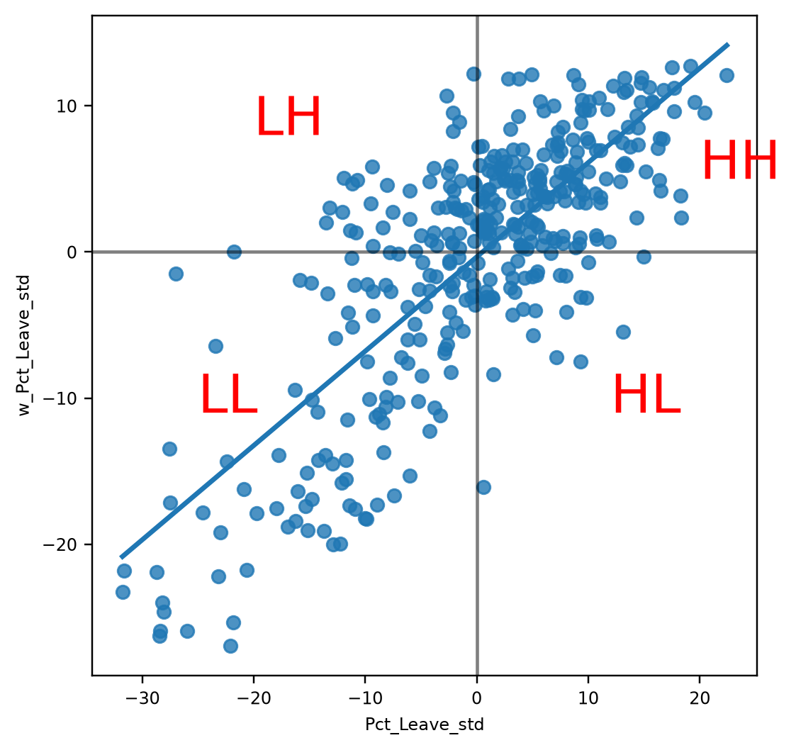
HH top-right, LH top-left, LL bottom-left, HL bottom-right.
Local Moran’s \(I_i\)
The statistic
\[ I_i = \dfrac{z_i}{m_2} \displaystyle\sum_j w_{ij} z_j \; ; \; m_2 = \dfrac{\sum_i z_i^2}{n} \]
where \(m_2\) is the second moment (variance) of the distribution, \(z_i = y_i - \bar{y}\), and \(w_{ij}\) the spatial weight for the pair \((i,j)\).
The mechanism is similar to the global Moran’s \(I\), but applied to each observation - giving as many statistics as original observations.
What it identifies
Cases in which the value of an observation and the average of its surroundings are either more similar (HH, LL) or more dissimilar (HL, LH) than we would expect from pure chance.
The quadrant classification alone is exhaustive — every point gets a label. LISAs add the crucial question: is the concentration unusually strong?
Local Moran’s \(I_i\)
Computing and inspecting
A rather skewed distribution, due to the dominance of positive forms of spatial association. High positive values arise from value similarity - high-next-to-high or low-next-to-low. The \(I_i\) values alone cannot distinguish these two cases.
The left tail represents negative spatial association - again in two forms (HL and LH) that \(I_i\) cannot tell apart.
Local Moran’s \(I_i\)
Why a choropleth of \(I_i\) is not enough
A map of the raw \(I_i\) values tells us whether local association is positive (HH/LL) or negative (HL/LH), but it cannot tell us whether the yellow areas in Scotland are similar to the yellow cluster in the east.
Are they both HH? Both LL? One of each?
And: values around zero are not statistically significant. Which local statistics are clusters, and which are mere noise?
Four maps, four acts
- a plain choropleth of the local statistic \(I_i\)
- the quadrant each area falls into
- whether the statistic is significant
- the combination of 2 and 3 — the cluster map
splot provides a lightweight visualization layer for exactly this.
Local Moran’s \(I_i\)
Code
from splot import esda as esdaplot
f, axs = plt.subplots(nrows=2, ncols=2, figsize=(10, 10))
axs = axs.flatten()
# 1. Choropleth of local statistics
db.assign(Is=lisa.Is).plot(
column="Is",
cmap="plasma",
scheme="quantiles",
k=5,
edgecolor="white",
linewidth=0.1,
alpha=0.75,
legend=True,
ax=axs[0],
)
# 2. Quadrant categories (p=1 so every polygon gets a colour)
esdaplot.lisa_cluster(lisa, db, p=1, ax=axs[1])
# 3. Significance map
labels = pandas.Series(
1 * (lisa.p_sim < 0.05), index=db.index
).map({1: "Significant", 0: "Non-Significant"})
db.assign(cl=labels).plot(
column="cl",
categorical=True,
k=2,
cmap="Paired",
linewidth=0.1,
edgecolor="white",
legend=True,
ax=axs[2],
)
# 4. Cluster map at the 5% level
esdaplot.lisa_cluster(lisa, db, p=0.05, ax=axs[3])
for i, ax in enumerate(axs.flatten()):
ax.set_axis_off()
ax.set_title(
[
"Local Statistics",
"Scatterplot Quadrant",
"Statistical Significance",
"Moran Cluster Map",
][i],
y=0,
)
f.tight_layout()
plt.show()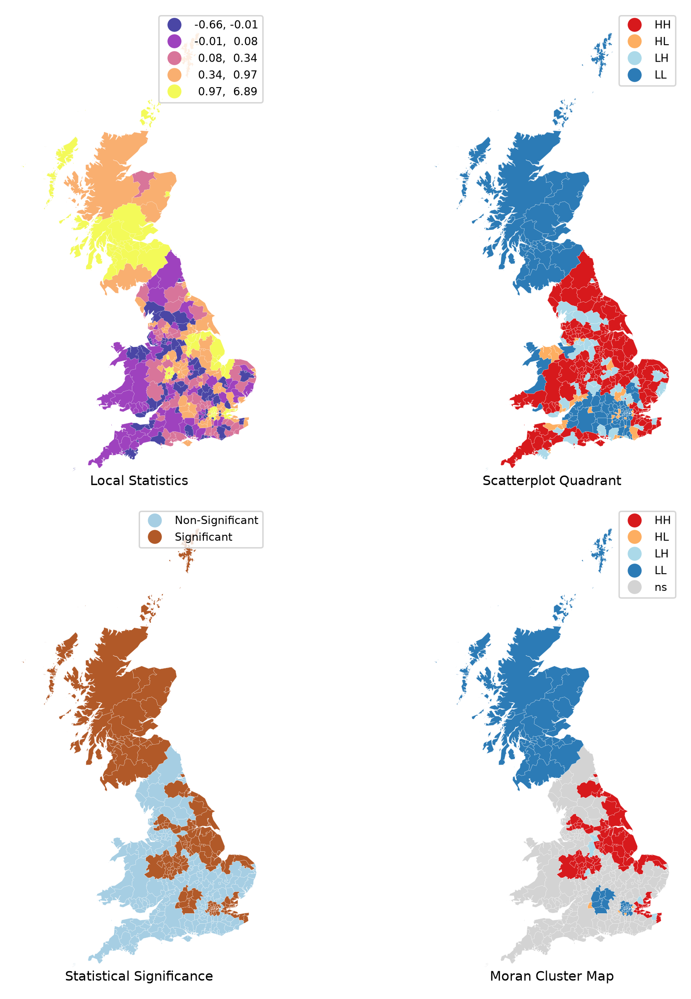
Local Moran’s \(I_i\)
The quadrant attribute
1 = HH, 2 = LH, 3 = LL, 4 = HL.
High-high (1) and low-low (3) predominate.
Comparing the top two maps reveals that the positive local association in Scotland is due to low support for Brexit, while in the south it is among authorities that strongly support Brexit.
What the cluster map reveals
- Fewer than half of the polygons have local spatial association strong enough to reject pure chance - a little over 41%.
- Three clear areas of low support for leaving: Scotland, London, and the area around Oxford.
- Although many areas appeared to have concentrated high support, only the North-East and West of England show enough strength to reasonably rule out pure chance.
Exporting LISA results
Getting the pieces out of the object
splot handles cluster maps, but quite a bit happens under the hood. To reuse this information in a broader data pipeline:
Masking quadrants by significance
Only observations in a quadrant that are significant keep that quadrant label; the rest become “Non-Significant”:
# Pick as part of a quadrant only significant polygons,
# assign `0` otherwise (Non-significant polygons)
spots = lisa.q * sig
spots_labels = {
0: "Non-Significant",
1: "HH",
2: "LH",
3: "LL",
4: "HL",
}
db["labels"] = pandas.Series(spots, index=db.index).map(
spots_labels
)
db["labels"].value_counts()labels
Non-Significant 218
HH 81
LL 70
LH 7
HL 4
Name: count, dtype: int64Exporting LISA results
A mnemonic vocabulary
Positive local spatial autocorrelation:
- HH \(\rightarrow\) “hot spots” — values at the site and its surroundings are larger than average
- LL \(\rightarrow\) “cold spots” — significant clusters of low values surrounded by low values
Negative local spatial autocorrelation:
- LH \(\rightarrow\) “doughnuts” — low value, high surroundings
- HL \(\rightarrow\) “diamonds in the rough” — high value, low surroundings
The terminology is purely mnemonic, but it helps in remembering the interpretation.
We see many more hotspots/coldspots than doughnuts/diamonds - consistent with the skew in the distribution of local statistics.
Getis and Ord’s local statistics
Two forms
- \(G_i\) — omits the value at a site from its own local summary
- \(G_i^*\) — includes the site’s own value
When standardized, positive values imply clustering of high values, negative imply grouping of low values.
Unlike LISA, it is not possible to discern spatial outliers.
Getis and Ord’s local statistics
splot does not cover \(G\) - so we write a helper
def g_map(g, db, ax):
"""Create a cluster map from a G_Local object"""
ec = "0.8"
# Break observations into significant or not
sig = g.p_sim < 0.05
# Plot non-significant clusters
ns = db.loc[sig == False, "geometry"]
ns.plot(ax=ax, color="lightgrey", edgecolor=ec, linewidth=0.1)
# Plot HH clusters
hh = db.loc[(g.Zs > 0) & (sig == True), "geometry"]
hh.plot(ax=ax, color="red", edgecolor=ec, linewidth=0.1)
# Plot LL clusters
ll = db.loc[(g.Zs < 0) & (sig == True), "geometry"]
ll.plot(ax=ax, color="blue", edgecolor=ec, linewidth=0.1)
contextily.add_basemap(
ax,
crs=db.crs,
source=contextily.providers.Esri.WorldTerrain,
)
st = "*" if g.star else ""
ax.set_title(f"G{st} statistic for Pct of Leave votes", size=15)
ax.set_axis_off()
return axGetis and Ord’s local statistics
Getis and Ord’s local statistics
Why use \(G_i\) at all?
The results are virtually identical for \(G_i\) and \(G_i^*\), and at first glance similar to the LISA cluster map. So why bother?
They are complementary statistics:
- local \(I_i\) (on its own) gives an indication of cluster / outlier status
- local \(G_i\) shows which side of the hotspot / coldspot divide the observation is on
The local Moran’s \(I_i\) cluster map provides both pieces of information - but it can be more challenging to visualize all at once.
It depends on your analytical preferences and the point of the analysis at hand.
Local statistics on surfaces
The plan
More and more data for which we might want to explore local spatial autocorrelation are provided as surfaces rather than geo-tables.
Surfaces also provide data spatially arranged — so we can apply the same battery of tools. We use the GHSL São Paulo population grid.
Local statistics on surfaces
Step 1 — read and build weights
int8 <class 'libpysal.weights.weights.WSP'>Two problems:
- the matrix is built with integers (
int8) — we need floats so multiplication gives the right result - we have a
WSP(a thin, memory-efficient version) but LISA needs a fullW
Step 2 — convert WSP to W
w_surface_all = weights.WSP2W( # 3. Convert `WSP` object to `W`
weights.WSP( # 2a. Build `WSP` from the float sparse matrix
w_surface_sp.sparse.astype(
float
), # 1. Convert sparse matrix to floats
id_order=w_surface_sp.index.tolist(), # 2b. Ensure `W` is indexed
)
)
w_surface_all.index = w_surface_sp.index # 4. Reattach index- convert values from integers into floats via the underlying sparse matrix
- wrap that sparse matrix into a
WSP(a thin wrapper — quick) - convert to a full-fledged
WwithWSP2W(this takes more computing muscle) - reattach the
indexobject, which will help us return data to a surface later
Local statistics on surfaces
Step 3 — align the values
nodata: -200.0 | pixels kept: 97232w_surface_all contains a row and column for every pixel, including nodata ones. Subset it to match:
Local statistics on surfaces
Step 5 — back to a surface
from libpysal.weights import raster
sig_pop = pandas.Series(
pop_lisa.q
* (pop_lisa.p_sim < 0.01), # Quadrant if significant at 1%
index=pop_values.index,
)
# Build `DataArray` from a set of values and weights
lisa_da = raster.w2da(
sig_pop, # Values
w_surface, # Spatial weights
attrs={"nodatavals": [pop.rio.nodata]},
).rio.write_crs(pop.rio.crs)
sorted(lisa_da.to_series().unique())[np.int64(-200),
np.int64(0),
np.int64(1),
np.int64(2),
np.int64(3),
np.int64(4)]Missing data keeps the original value; 0 is non-significant; 1–4 are HH, LH, LL, HL.
Step 6 — hardwire the colours
With geo-tables splot did this for us. For surfaces we are not that lucky:
from matplotlib.colors import ListedColormap
# LISA colors
lc = {
"ns": "lightgrey", # Values of 0
"HH": "#d7191c", # Values of 1
"LH": "#abd9e9", # Values of 2
"LL": "#2c7bb6", # Values of 3
"HL": "#fdae61", # Values of 4
}
lisa_cmap = ListedColormap(
[lc["ns"], lc["HH"], lc["LH"], lc["LL"], lc["HL"]]
)
lisa_cmap
Local statistics on surfaces
Code
f, axs = plt.subplots(1, 2, figsize=(11, 5.5))
# Select pixels that are not missing data
pop.where(pop != pop.rio.nodata).plot(
ax=axs[0], add_colorbar=False
)
# Rescale to [0, 1] by dividing by 4 (maximum value in `lisa_da`)
(lisa_da.where(lisa_da != -200) / 4).plot(
cmap=lisa_cmap, ax=axs[1], add_colorbar=False
)
titles = ["Population by pixel", "Population clusters"]
for i in range(2):
axs[i].axis("equal")
axs[i].set_axis_off()
axs[i].set_title(titles[i])
contextily.add_basemap(axs[i], crs=lisa_da.rio.crs)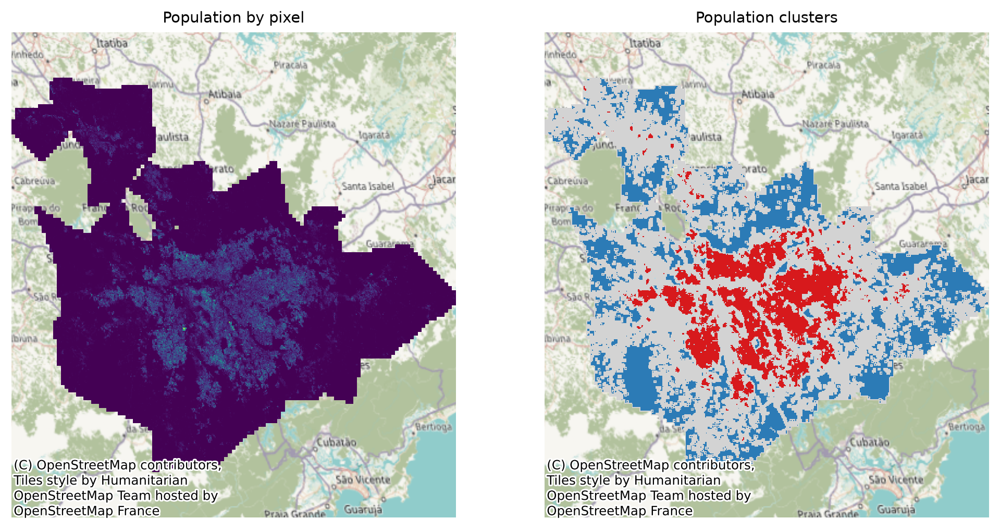
Local spatial autocorrelation
Take-aways
Local statistics are one of the most commonly used tools in the geographic data science toolkit — the most common “first brush” geographic statistic for many analyses.
- Local Moran’s \(I_i\) summarizes the co-variation between observations and their immediate surroundings \(\rightarrow\) cluster and outlier status
- Getis-Ord local \(G\) compares the sum of values in the area around each site \(\rightarrow\) hotspot / coldspot, but no outliers
Used properly, local statistics provide a powerful way to analyze and visualize the structure of geographic data.
Point Pattern Analysis
Point pattern analysis
Two ways to understand points
1. Fixed objects in space - location is taken as given (exogenous), secondary to the value observed at the point.
Example: the number of cars traversing a road intersection. The location is fixed; the data of interest is the measurement there. Analysis resembles that of polygons and lines.
2. Sites of measurement from an underlying continuous process - the measurement could theoretically take place anywhere, but was only carried out in certain locations.
Example: the length of birds’ wings. Location reflects bird movement and foraging; wing length reflects an ecological process.
We will adopt the second perspective: both the location and the measurement matter.
Point pattern analysis
What is a point pattern?
When points are seen as events that could take place in several locations but only happen in a few of them, a collection of such events is a point pattern. The location of points is one of the key aspects of interest.
A good example is geo-tagged photographs: they could technically happen in many locations, but tend to concentrate in a handful.
Types:
- unmarked - only the coordinates of where the event occurred
- marked - more attributes are provided with the location (time, camera model, an “image quality score”)
Point pattern analysis
The questions
Point pattern analysis is concerned with the visualization, description, statistical characterization, and modeling of point patterns:
- What does the pattern look like?
- What is the nature of the distribution of points?
- Is there any structure in the way locations are arranged over space - are events clustered, or dispersed?
- Why do events occur in those places and not in others?
Point pattern analysis
Process vs. pattern
Process - the underlying mechanism at work that generates the outcome. Abstract; we do not get to see it. It is the how.
Pattern - the result of that process. Often the only trace we can observe, and thus the only input we have to reconstruct it.
Pattern is only a reflection of process. The real challenge is not to characterize the former but to use it to work out the latter.
Patterns in Tokyo photographs
Flickr metadata
Geo-referenced images uploaded to Flickr, extracted from the 100m Flickr dataset — a form of volunteered geographic information (VGI).
<class 'pandas.DataFrame'>
RangeIndex: 10000 entries, 0 to 9999
Data columns (total 7 columns):
# Column Non-Null Count Dtype
--- ------ -------------- -----
0 user_id 10000 non-null str
1 longitude 10000 non-null float64
2 latitude 10000 non-null float64
3 date_taken 10000 non-null str
4 photo/video_page_url 10000 non-null str
5 x 10000 non-null float64
6 y 10000 non-null float64
dtypes: float64(4), str(3)
memory usage: 1.4 MB10,000 photographs: user ID, latitude/longitude, a Pseudo-Mercator version (x, y), the timestamp, and the URL.
Note the spatial information is encoded as separate columns - in contrast to previous slides where it lived in a single geometry column.
Point pattern analysis
Showing patterns as dots on a map
Point pattern analysis
Adding context
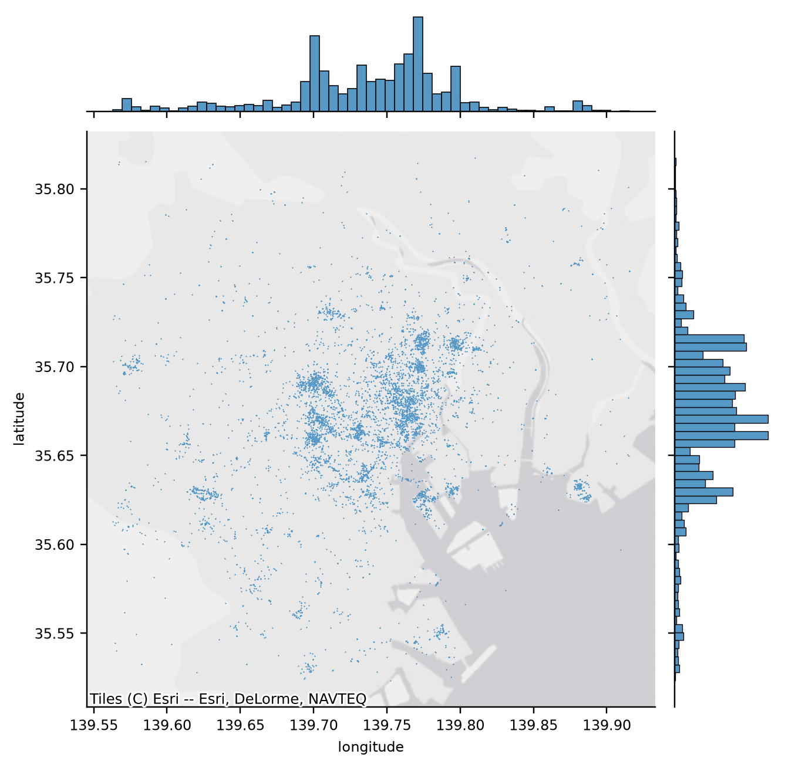
We pull out the axis where the points are plotted and add the basemap there, specifying the CRS as WGS84 since we are plotting longitude and latitude.
Point pattern analysis
From tables to surfaces, again: showing density with hexbinning
The second problem is cluttering. Where too many photos concentrate, opaque dots on top of one another obscure the pattern.
The solution is moving from tables to surfaces — recast here as a spatial (two-dimensional) histogram:
- generate a regular grid (squared or hexagonal)
- count how many dots fall within each grid cell
- present it as any other choropleth
We use hexagonal binning: less shape distortion and more regular connectivity between cells than a squared grid.
Code
f, ax = plt.subplots(1, figsize=(9, 7))
# 50 hexagons in each dimension, no borderlines,
# half transparency, reverse viridis colormap
hb = ax.hexbin(
db["x"],
db["y"],
gridsize=50,
linewidths=0,
alpha=0.5,
cmap="viridis_r",
)
contextily.add_basemap(
ax, source=BASEMAP
)
plt.colorbar(hb)
ax.set_axis_off()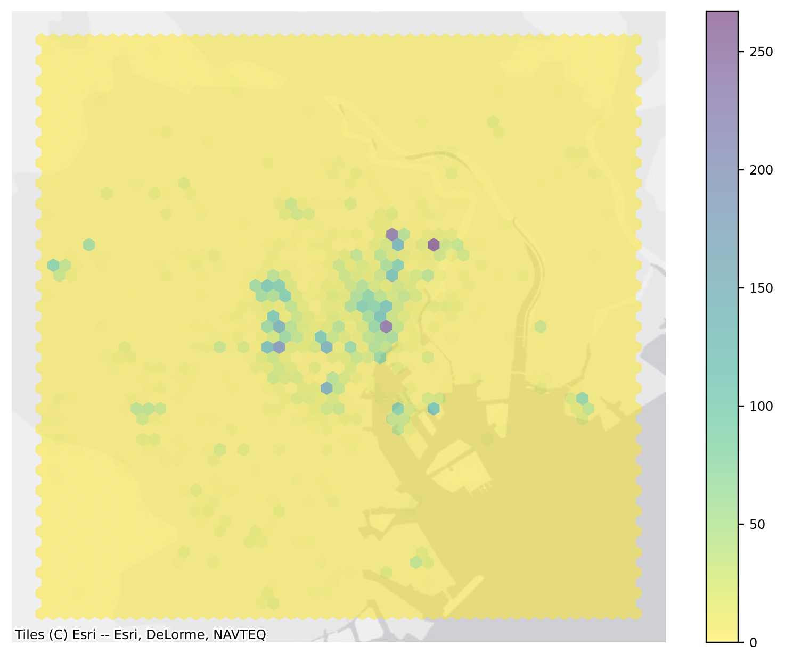
A lot more detail: the majority of photographs relate to much more localized areas than the previous map suggested.
Kernel density estimation
Escaping the grid
Grids are the spatial equivalent of a histogram: the user decides how many “buckets” and points are counted discretely. Fast, efficient, potentially detailed — but a discretization of an essentially contiguous phenomenon, which may introduce distortions (e.g., the modifiable areal unit problem).
A kernel density estimate (KDE) is an empirical approximation of the probability density function:
- lay a grid of points over the space of interest
- place kernel functions on them that count nearby points with a weight based on distance
- aggregate to generate a global probability surface
The most common kernel is the Gaussian one.
Code
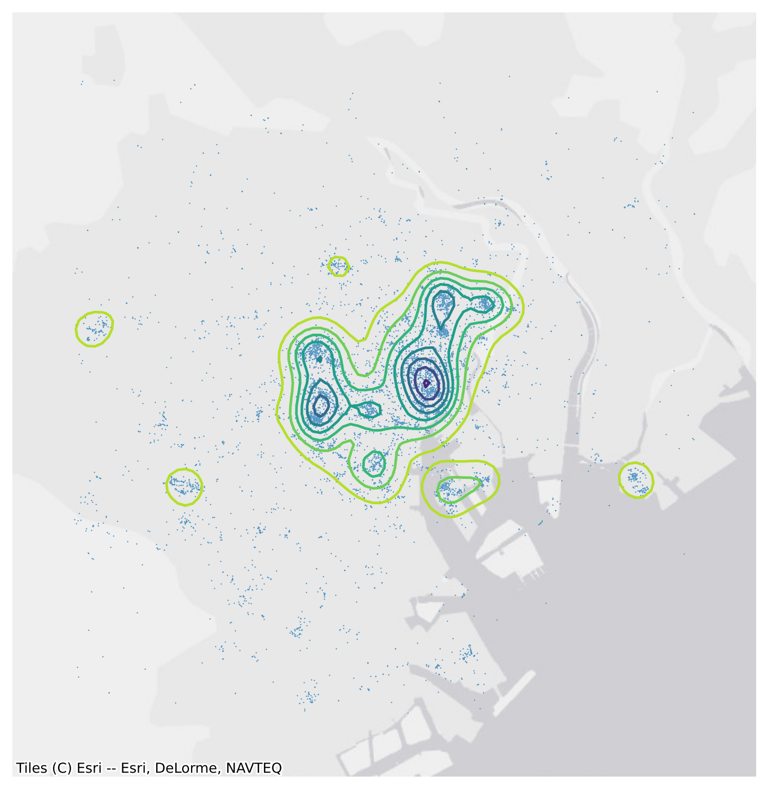
A smoother output capturing the same structure as the hexbin, but easing the transitions between areas.
Centrography
The point pattern’s measures of central tendency
Centrography is the analysis of centrality in a point pattern: the general location and dispersion of the pattern.
If the hexbin is a “spatial histogram”, centrography is the point pattern equivalent of the mean and standard deviation.
Many indices provide an indication of:
- where a point pattern is
- how tightly it clusters around its centre
- how irregular its shape is
Tendency
Mean and median centres
- centre of mass — for marked patterns, a central point close to observations with higher marked values; for unmarked patterns it equals the mean centre, the average of the coordinates
- median centre — half the data is above or below, and half to its left or right
mean : [15555485.40274061 4255558.40964842]
median: [15556147.99665746 4255894.38009221]Code
joint_axes = seaborn.jointplot(
x="x", y="y", data=db, s=0.75, height=7
)
joint_axes.ax_joint.scatter(
*mean_center, color="red", marker="x", s=50, label="Mean Center"
)
joint_axes.ax_marg_x.axvline(mean_center[0], color="red")
joint_axes.ax_marg_y.axhline(mean_center[1], color="red")
joint_axes.ax_joint.scatter(
*med_center,
color="limegreen",
marker="o",
s=50,
label="Median Center"
)
joint_axes.ax_marg_x.axvline(med_center[0], color="limegreen")
joint_axes.ax_marg_y.axhline(med_center[1], color="limegreen")
joint_axes.ax_joint.legend()
contextily.add_basemap(
joint_axes.ax_joint, source=BASEMAP
)
joint_axes.ax_joint.set_axis_off()
plt.show()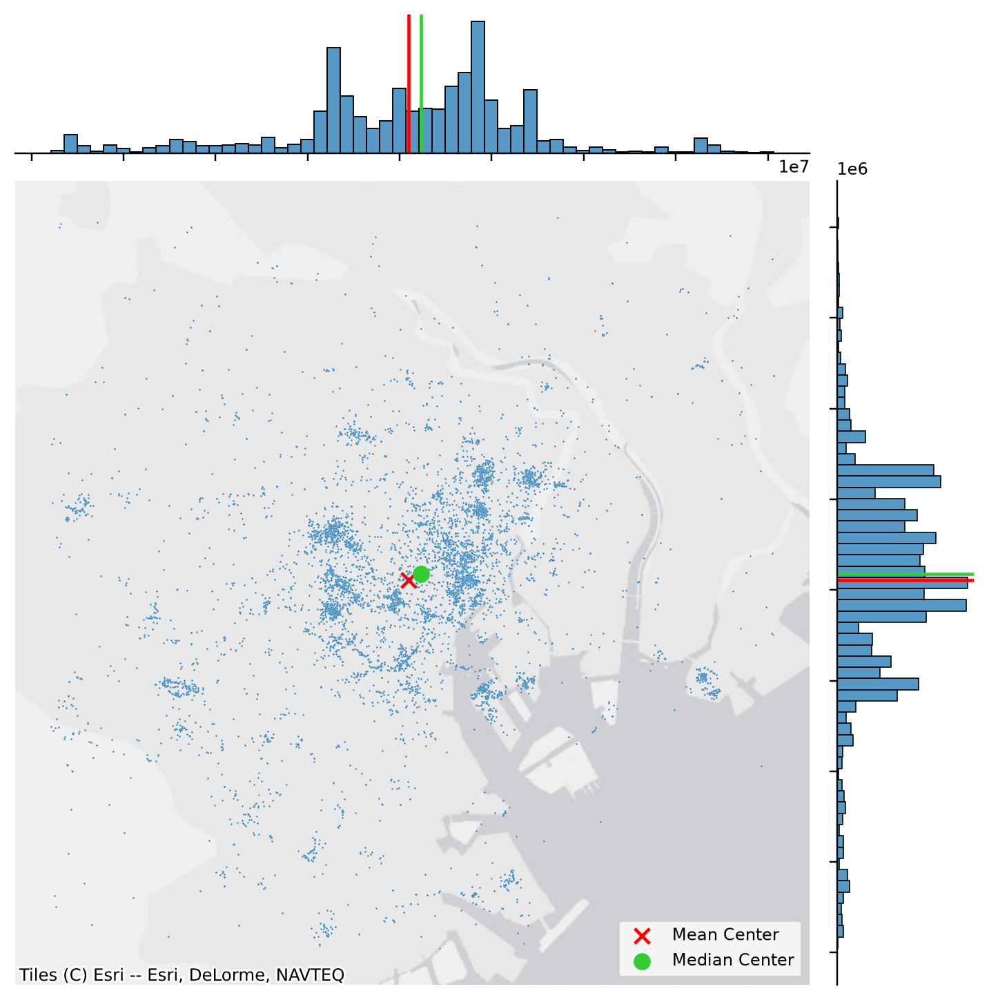
The discrepancy is caused by skew: far-out clusters in West and South Tokyo pull the mean centre away from the median one.
Dispersion
Code
from matplotlib.patches import Ellipse
f, ax = plt.subplots(1, figsize=(8, 8))
ax.scatter(db["x"], db["y"], s=0.75)
ax.scatter(
*mean_center, color="red", marker="x", label="Mean Center"
)
ax.scatter(
*med_center, color="limegreen", marker="o", label="Median Center"
)
ellipse = Ellipse(
xy=mean_center, # center the ellipse on our mean center
width=major * 2, # ellipse() only gives half the axis
height=minor * 2,
angle=numpy.rad2deg(rotation), # degrees, not radians
facecolor="none",
edgecolor="red",
linestyle="--",
label="Std. Ellipse",
)
ax.add_patch(ellipse)
ax.legend()
contextily.add_basemap(
ax, source=BASEMAP
)
plt.show()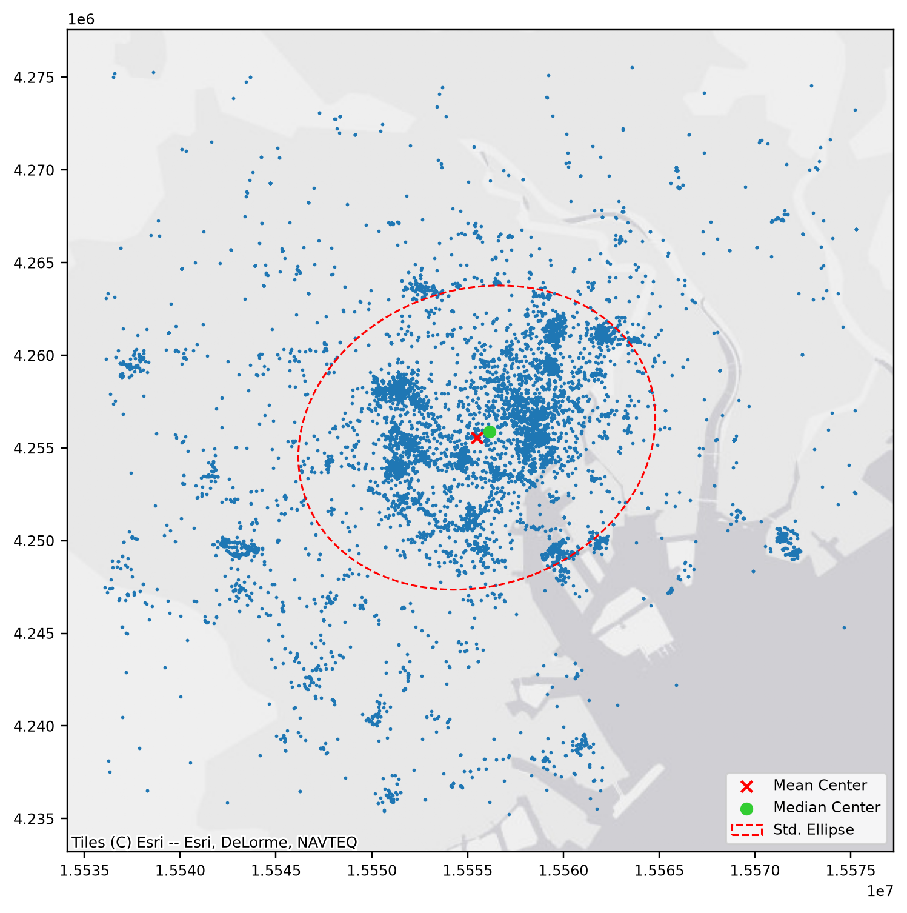
Extent
Five shapes, varying tightness
- convex hull — the tightest convex shape enclosing the points; never “doubles back”, no divets, valleys or holes; all interior angles below 180°
- alpha shape (concave hull) — a tighter version of the convex hull
- minimum bounding rectangle — the tightest axis-aligned rectangle
- minimum rotated rectangle — allowing diagonals gives a smaller area, but an askew rectangle
- minimum bounding circle — the smallest enclosing circle; often bigger than the bounding rectangle
To make differences clear we use the photos of the most prolific user in the dataset.
Extent
The rolling-ball intuition
A convex hull is the space left over when rolling a really large ball around the shape — so large its radius is infinite, so the lines are straight.
An alpha shape is the space made from rolling a small ball around the shape. It rolls into the dips and valleys between points. As the ball grows, the alpha shape becomes the convex hull. If alpha gets too small, the ball “slips” through the points, producing more than one hull.
import libpysal
user = db.query('user_id == "95795770@N00"')
coordinates = user[["x", "y"]].values
convex_hull_vertices = centrography.hull(coordinates)
alpha_shape, alpha, circs = libpysal.cg.alpha_shape_auto(
coordinates, return_circles=True
)
print("n points:", len(coordinates), "| alpha:", round(alpha, 1))n points: 419 | alpha: 8652.5alpha_shape_auto finds the smallest single alpha shape, so you do not have to guess how big the ball needs to be.
The three remaining bounds
# Minimum rotated rectangle, via geopandas
point_array = geopandas.points_from_xy(x=user.x, y=user.y)
min_rot_rect = point_array.union_all().minimum_rotated_rectangle
# Axis-aligned minimum bounding rectangle, via pointpats
min_rect_vertices = centrography.minimum_bounding_rectangle(
coordinates
)
# Minimum bounding circle
(center_x, center_y), radius = centrography.minimum_bounding_circle(
coordinates
)
print("circle radius:", round(radius, 1))circle radius: 19287.1Extent
Code
from matplotlib.patches import Polygon, Circle, Rectangle
convex_hull_patch = Polygon(
convex_hull_vertices,
closed=True,
edgecolor="blue",
facecolor="none",
linestyle=":",
linewidth=2,
label="Convex Hull",
)
min_rect_width = min_rect_vertices[2] - min_rect_vertices[0]
min_rect_height = min_rect_vertices[3] - min_rect_vertices[1]
min_rect_patch = Rectangle(
min_rect_vertices[0:2],
width=min_rect_width,
height=min_rect_height,
edgecolor="goldenrod",
facecolor="none",
linestyle="dashed",
linewidth=2,
label="Min Bounding Rectangle",
)
circ_patch = Circle(
(center_x, center_y),
radius=radius,
edgecolor="red",
facecolor="none",
linewidth=2,
label="Min Bounding Circle",
)
f, ax = plt.subplots(1, figsize=(9, 9))
geopandas.GeoSeries([alpha_shape]).plot(
ax=ax,
edgecolor="purple",
facecolor="none",
linewidth=2,
label="Alpha Shape",
)
geopandas.GeoSeries([min_rot_rect]).plot(
ax=ax,
edgecolor="green",
facecolor="none",
linestyle="--",
label="Min Rotated Rectangle",
linewidth=2,
)
ax.add_patch(convex_hull_patch)
ax.add_patch(min_rect_patch)
ax.add_patch(circ_patch)
ax.scatter(db.x, db.y, s=0.75, color="grey")
ax.scatter(user.x, user.y, s=100, color="r", marker="x")
ax.legend(ncol=1, loc="center left")
contextily.add_basemap(
ax, source=BASEMAP
)
plt.show()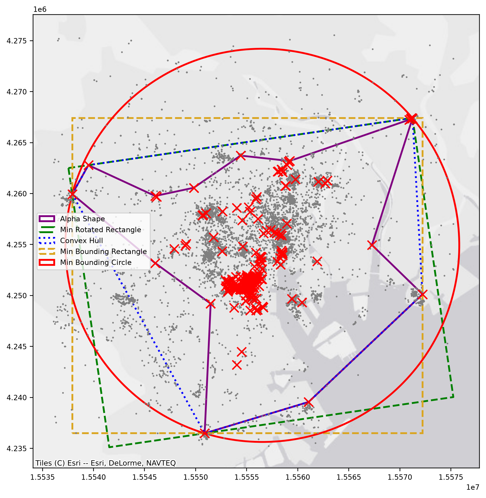
The alpha shape is much tighter than the rest. The bounding rectangle and circle are the loosest - they contain the most area outside the user’s typical range - but they are the simplest shapes to draw and understand.
Randomness and clustering
How even is the distribution?
Do points tend to all cluster near one another, or disperse evenly throughout the problem area? This refers to the intensity or dispersion of the pattern overall.
In other words: what is the overall degree of clustering?
Two families of technique:
- Quadrat statistics - split the data into small areas (“buckets”) and examine the uniformity of counts across them
- Ripley’s functions - measurements of the distance between points in the pattern
Randomness and clustering
A known-random benchmark
It helps to have a pattern from a known completely spatially random process: the location and number of points is totally random, with neither clustering nor dispersion. This is a Poisson point process.
By default the simulator works with the bounding box of the input pattern. To restrict it to a tighter area, pass a hull:
Code
f, axs = plt.subplots(1, 2, figsize=(11, 5.5))
for ax, rp, title in [
(axs[0], random_pattern, "Random in bounding box"),
(axs[1], random_pattern_ashape, "Random in alpha shape"),
]:
ax.scatter(
*coordinates.T, color="k", marker=".", label="Observed"
)
ax.scatter(*rp.T, color="r", marker="x", label="Random")
contextily.add_basemap(
ax, source=BASEMAP
)
ax.set_title(title)
ax.set_axis_off()
axs[0].legend(ncol=1, loc="center left")
plt.show()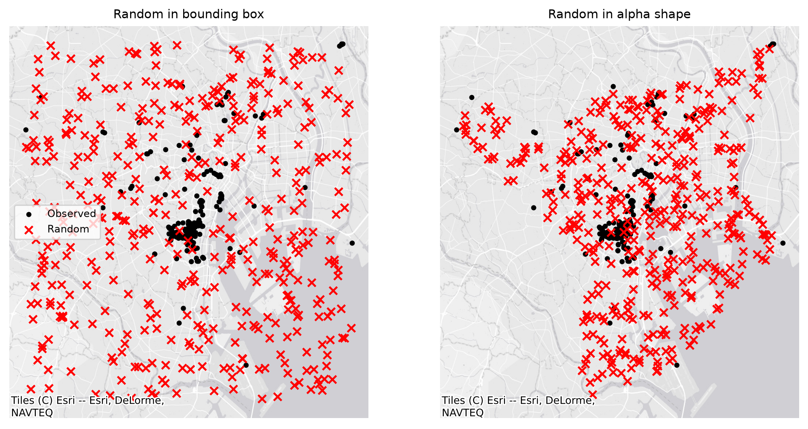
Quadrat statistics
Counting in cells
Examine the spatial distribution in terms of the count of observations falling within each cell, testing whether observations are spread evenly.
Strictly speaking, quadrat statistics examine the evenness of the distribution using a \(\chi^2\) test common in the analysis of contingency tables.
With the default three-by-three grid, the central square has over 350 observations while surrounding cells have far fewer.
Quadrat statistics
Quadrat statistics
A trap: irregular study areas
Quadrat counts are measured on a regular tiling overlaid on a potentially irregular extent. Irregular but random patterns can be mistakenly found “significant”.
The test finds this statistically non-random - yet our simulating process guaranteed that within the given study area it is completely spatially random.
One way to reconcile this: think of the quadrat statistic as testing both the uniformity of points and the shape of their extent. Useful sometimes; use with caution.
Ripley’s alphabet of functions
Two quantities
Derived from Ripley’s seminal work on characterizing clustering or co-location:
- nearest neighbour distances - how far each point is from its closest companion
- “gaps” in the pattern - how far empty space is from the nearest point
Each function characterizes an aspect of the pattern as we increase the distance range from each point.
Ripley’s \(G\)
Keeps track of the proportion of points for which the nearest neighbour is within a given distance threshold, plotted against increasing distance radii.
- \(G\) increasing rapidly with distance \(\rightarrow\) clustered
- \(G\) increasing slowly \(\rightarrow\) dispersed
- something in between \(\rightarrow\) hard to distinguish from pure chance
Ripley’s alphabet of functions
Code
f, ax = plt.subplots(1, 2, figsize=(8, 4), sharex=True, sharey=True)
ax[0].scatter(*random_pattern.T, color="red")
ax[1].scatter(
*random_pattern.T,
color="red",
zorder=100,
marker=".",
label="Points"
)
nn_ixs, nn_ds = PointPattern(random_pattern).knn(1)
for coord, nn_ix, nn_d in zip(random_pattern, nn_ixs, nn_ds):
dx, dy = random_pattern[nn_ix].squeeze() - coord
ax[1].arrow(
*coord,
dx,
dy,
length_includes_head=True,
overhang=0,
head_length=300 * 3,
head_width=300 * 3,
width=50 * 3,
linewidth=0,
facecolor="k",
head_starts_at_zero=False
)
ax[0].axis([1.554e7, 1.556e7, 4240000, 4260000])
for a in ax:
a.set_xticks([])
a.set_yticks([])
f.tight_layout()
plt.show()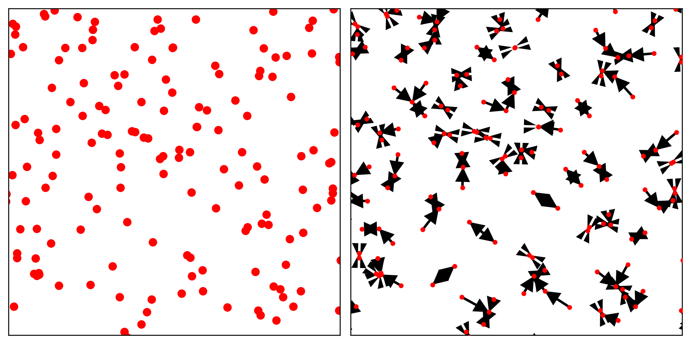
Black arrows point to each point’s nearest neighbour. Note some pairs are mutual nearest neighbours (arrows both ways), others are not.
Ripley’s \(G\)
Code
f, ax = plt.subplots(
1, 2, figsize=(9, 3), gridspec_kw=dict(width_ratios=(6, 3))
)
# plot all the simulations with very fine lines
ax[0].plot(
g_test.support, g_test.simulations.T, color="k", alpha=0.01
)
ax[0].plot(
g_test.support,
numpy.median(g_test.simulations, axis=0),
color="cyan",
label="median simulation",
)
ax[0].plot(
g_test.support, g_test.statistic, label="observed", color="red"
)
ax[0].set_xlabel("distance")
ax[0].set_ylabel("% of nearest neighbor\ndistances shorter")
ax[0].legend()
ax[0].set_xlim(0, 2000)
ax[0].set_title(r"Ripley's $G(d)$ function")
ax[1].scatter(*coordinates.T)
ax[1].set_xticks([])
ax[1].set_yticks([])
ax[1].set_title("Pattern")
f.tight_layout()
plt.show()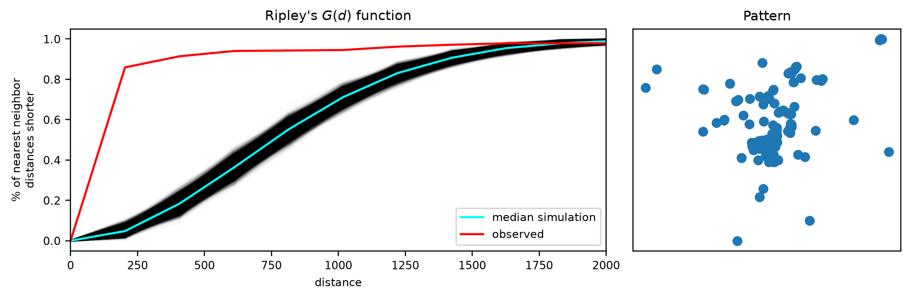
The red empirical function rises much faster than simulated random patterns \(\rightarrow\) points are closer to their nearest neighbours than expected. The pattern is clustered.
Ripley’s \(F\)
The “empty space function”
Where \(G\) analyses the distance between points in the pattern, \(F\) analyses the distance to points in the pattern from locations in empty space.
\(F\) accumulates, for a growing distance range, the percentage of points found within that range from a random point pattern generated within the extent of the observed one.
- large gaps or empty areas \(\rightarrow\) \(F\) increases slowly
- highly dispersed pattern \(\rightarrow\) \(F\) increases rapidly
Code
f, ax = plt.subplots(
1, 2, figsize=(9, 3), gridspec_kw=dict(width_ratios=(6, 3))
)
ax[0].plot(
f_test.support, f_test.simulations.T, color="k", alpha=0.01
)
ax[0].plot(
f_test.support,
numpy.median(f_test.simulations, axis=0),
color="cyan",
label="median simulation",
)
ax[0].plot(
f_test.support, f_test.statistic, label="observed", color="red"
)
ax[0].set_xlabel("distance")
ax[0].set_ylabel("% of nearest point in pattern\ndistances shorter")
ax[0].legend()
ax[0].set_xlim(0, 2000)
ax[0].set_title(r"Ripley's $F(d)$ function")
ax[1].scatter(*coordinates.T)
ax[1].set_xticks([])
ax[1].set_yticks([])
ax[1].set_title("Pattern")
f.tight_layout()
plt.show()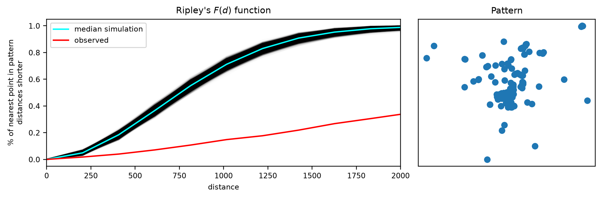
The observed \(F\) increases much more slowly than the simulations \(\rightarrow\) many gaps in our pattern \(\rightarrow\) clustered.
Identifying clusters
Clustering vs. clusters
The previous sections characterize whether a pattern is dispersed or clustered - the degree of overall clustering.
But knowing a pattern is clustered does not tell us where the clusters are. For that we need a method able to identify areas of high density of points.
The distinction is exactly analogous to global vs. local spatial autocorrelation.
The difference in technique comes from the unique nature of points: earlier methods take the location of objects as given and study the configuration of values; point pattern methods treat points as events that happen in particular locations but could happen in a much broader set of places.
DBSCAN
Density-Based Spatial Clustering of Applications with Noise
A widely used algorithm from knowledge discovery and machine learning. Its popularity resides in intellectual simplicity and computational tractability.
In some ways a point pattern counterpart of the local statistics - but with a fundamental difference: DBSCAN is not based on an inferential framework, it is a deterministic algorithm. We cannot estimate the degree to which the clusters found are compatible with spatial randomness.
DBSCAN
The definition
A cluster is a concentration of at least m points, each within a distance r of at least another point in the cluster. Each point is classified as:
- Noise - outside a cluster
- Core - inside a cluster, with at least
mpoints of the cluster within distancer - Border - inside a cluster, with fewer than
mpoints of the cluster withinr
Both m and r must be specified by the user - the flexibility and the limitation.
DBSCAN
A first run with the defaults
DBSCAN()In a Jupyter environment, please rerun this cell to show the HTML representation or trust the notebook.
On GitHub, the HTML representation is unable to render, please try loading this page with nbviewer.org.
Parameters
Fitted attributes
Following the standard scikit-learn interface: define, then fit.
array([ 1, 22, 30, 36, 42])labels_ always has the same length as the number of points.
Code
lbls = pandas.Series(clusterer.labels_, index=db.index)
f, ax = plt.subplots(1, figsize=(8, 8))
# Subset points that are not part of any cluster (noise)
noise = db.loc[lbls == -1, ["x", "y"]]
ax.scatter(noise["x"], noise["y"], c="grey", s=5, linewidth=0)
ax.scatter(
db.loc[db.index.difference(noise.index), "x"],
db.loc[db.index.difference(noise.index), "y"],
c="red",
linewidth=0,
)
contextily.add_basemap(
ax, source=BASEMAP
)
ax.set_axis_off()
plt.show()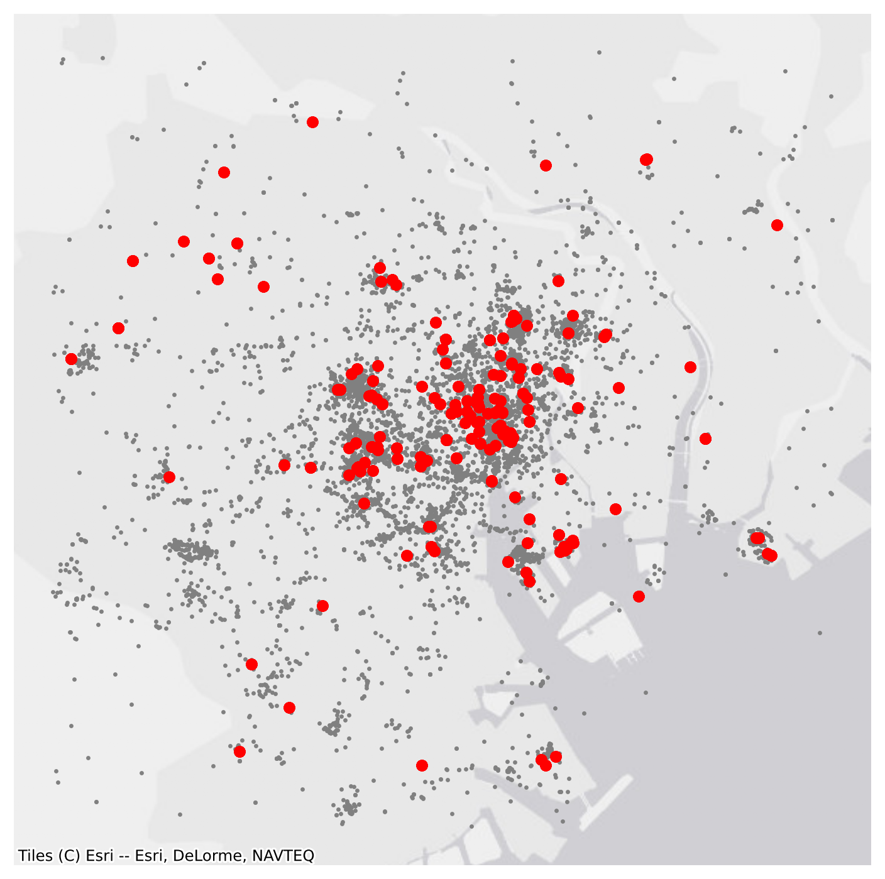
Not satisfactory - way too many points classified as noise. The defaults are a radius of 0.5 and a minimum of five points. Since our data is in metres, half a metre picks up only hyper-local clusters.
DBSCAN
Sensible parameters
Let a cluster need at least roughly 1% of all points, and expand the radius to 500 metres:
Code
f, ax = plt.subplots(1, figsize=(8, 8))
noise = db.loc[lbls == -1, ["x", "y"]]
ax.scatter(noise["x"], noise["y"], c="grey", s=5, linewidth=0)
ax.scatter(
db.loc[db.index.difference(noise.index), "x"],
db.loc[db.index.difference(noise.index), "y"],
c="red",
linewidth=0,
)
contextily.add_basemap(
ax, source=BASEMAP
)
ax.set_axis_off()
plt.show()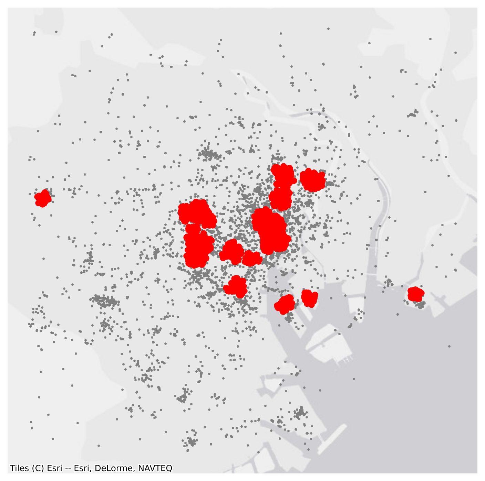
Now the algorithm picks up the general patterns: the main concentrations of photographic attention in Tokyo.
Point pattern analysis
Take-aways
- Visualize the locations, overcoming the “cluttering” challenge - hexbin and KDE
- Characterize their spatial distribution statistically - central tendency, dispersion, extent; the point pattern counterparts of the mean and standard deviation
- Test whether the pattern is clustered or dispersed - quadrat and Ripley’s functions
- Locate the clusters themselves - DBSCAN
These techniques answer fundamental questions about point patterns representing widely varied phenomena: from where photographs were taken, to the distribution of bird nests, to the clustering of bike crashes in a city.
Exercises
Choropleths
- A variable such as population density can be very skewed. What is an appropriate choropleth classification for a skewed variable?
- Provide two solutions to the problem of ties when applying quantile classification to \(y=[2,2,2,2,2,2,4,7,8,9,20,21]\) with \(k=4\). Discuss the merits of each.
- Which classifiers are appropriate for data with high multi-modality? Are there colormaps that work well for multi-modal data?
- Contrast classed and class-less (continuous-scale) choropleths. Strengths and limitations of each?
- To what extent do common classifiers take the geographical distribution into consideration? Can you think of ways to incorporate it?
- The Fisher-Jenks classifier always has more internally homogeneous classes. Given this, why might one choose a different \(k\)-classifier?
Exercises
Global autocorrelation
- Pull
Pct_Rejectedout ofref. Map it, build an 8-nearest-neighbour \(W\), make a Moran scatterplot, and compute Moran’s \(I\). What do we learn about the geography of vote rejection? - Imagine the referendum required 60% to succeed. Create a binary variable from
Pct_Leaveon that threshold, map it, and recompute the join counts. What changes? - Build
wk4andwk12KNN weights. Map the spatial lag ofPct_Leaveunder each; regenerate the Moran scatterplots; recompute Moran’s \(I\). How and why do they differ? Generalize: what is the effect of a more densely connected graph? - Compute Moran’s \(I\), Geary’s \(C\) and Getis-Ord’s \(G\) for
Pct_Rejectedwith the same \(W\). Do you draw substantially different conclusions? Can you find cases where \(I\) and \(G\) disagree substantially? What would drive that? - Using KNN weights, find the \(k\) at which Moran’s \(I\) is largest. Plot \(I\) against \(k\).
Exercises
Local autocorrelation
- Repeat the Local Moran and Getis-Ord analyses for
Pct_Turnout. Is there a geography to how involved people were? - Rates. Local Moran statistics rest on distributional assumptions, and rate data embeds the relationship between an event and a population. Build a table with
Electorate,Votes_CastandLeave; scatterplot each against percent Leave; confirm withscipy.stats.kendalltau. Then useesda.moran.Moran_RateandMoran_Local_Rateand compare against the uncorrected estimates — do any sites change their significance classification? Usepandas.crosstab. - Permutation distributions. The per-observation shuffle distributions live in
.rlisas. Plot the distribution for the first and last observation, withplt.axvline()at the observed value. From the distributions alone, do you expect either to be significant? - Uncertainty. Map the standard errors in
.seI_sim. Are some areas more uncertain? Verify that the standard deviation of each.rlisasrow equals itsseI_sim. - Scatterplot
go_i.Zsagainstgo_i_star.Zs. Then scatterplot percent Leave against their difference. Is there a relationship?
Exercises
Point patterns
- What is the trade-off when picking the hexagon granularity in hexbinning? Can we pick a “good” number of bins for all problems?
- KDE avoids partitioning space into buckets — but what are its limitations? Reproduce the KDE map varying the kernel and the bandwidth. What happens when the bandwidth is very small? How does that relate to the number of hexbins?
- What characteristics would a point pattern need for the mean and median centres to coincide?
- Using
libpysal.cg.alpha_shape, plot the alpha hull for \(\alpha = 0, .2, .4, .6, .8, 1, 1.5, 2, 4\). What happens as alpha increases? - Compute the density of photographs using each extent definition (bounding circle, bounding rectangle, rotated rectangle, convex hull, alpha shape). How much does the choice matter?
- How does the density of quadrats affect quadrat statistics?
- Can you use Ripley’s functions to inform the choice of DBSCAN parameters? How?